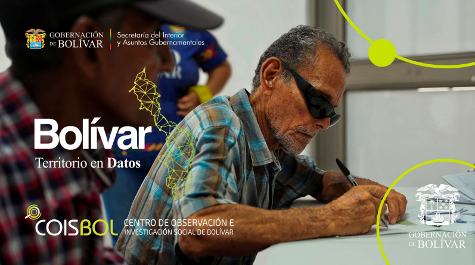

Municipios monitoreados
Cobertura piloto
Integramos datos, analizamos tendencias y producimos conocimiento aplicado para fortalecer la seguridad, la convivencia y la gobernabilidad en Bolívar.
Explorar el observatorio →
Datos demostrativos · Última actualización: junio 2026
Cobertura piloto
Últimos 30 días
2 de prioridad alta
Calidad de información
Lectura ejecutiva de tendencias, temas y alertas para apoyar decisiones territoriales.
Riesgo de conflictividad socialZona norte · Hace 2 h
Incremento de eventos reportadosDepresión Momposina · Ayer
Seguimiento a población priorizadaMontes de María · 2 días
Actualización de fuente institucionalCentro · 4 días
COISBOL recibe, procesa y analiza información estratégica sobre hechos de violencia, fenómenos sociales y dinámicas epidemiológicas que afectan la seguridad ciudadana, la convivencia, el orden público y el diálogo social.
“Un sistema de alerta temprana y análisis estratégico de riesgos sociales para el departamento.”
Fuentes confiables y actualizadas para una visión común.
Tendencias territoriales y poblacionales para actuar a tiempo.
Insumos oportunos e investigación aplicada con impacto.
Diez estudios sintetizan riesgos, violencias, justicia y derechos humanos en Bolívar. Las cifras conservan el periodo y la fuente de cada investigación.
Los indicadores no se suman entre sí: cada uno corresponde a un fenómeno, periodo y fuente institucional diferente.
Selecciona un estudio y recorre cada barra para consultar el valor y su contexto.
Fuente: artículos de investigación COISBOL – UNINÚÑEZ. Los indicadores conservan el periodo, universo y alcance de cada estudio.
Explora ZODES, municipios y concentración de casos. Usa el zoom, desplaza el mapa y pasa el cursor sobre cada territorio para consultar sus datos.
Consulta la composición territorial del departamento y reconoce los municipios que integran cada ZODES.
La intensidad cromática representa categorías o concentración relativa según la visualización seleccionada. Consulta las leyendas internas de cada mapa.
Gobernanza, procesos y capacidades para consolidar el centro.
Articulación intersectorial e interinstitucional alrededor de información confiable.
Productos claros, oportunos y accesibles para ciudadanía y tomadores de decisiones.
Compartir información, sumar capacidades y convertir evidencia
en acciones para el territorio.